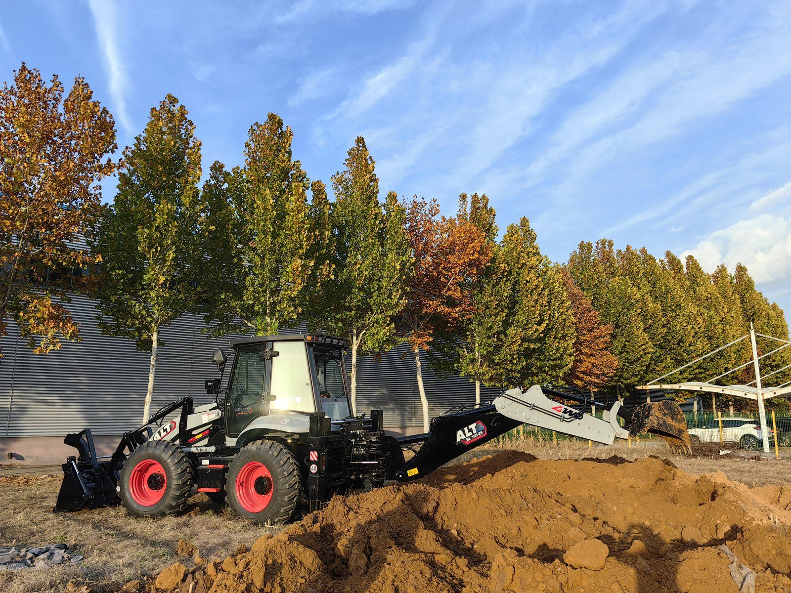

One machine doing the work it was bought for. The second-machine question is never whether this one looks busy — it is whether it has already turned away work it could not take.
"I Am Turning Work Away" — the Only Signal That Counts
Buyers describe a busy machine in two very different ways, and only one of them means it is time to buy another one.
The first is the calendar. "The machine is out every day." That can mean the machine is genuinely at capacity, or it can mean the machine is on a long, low-value job that fills the days without filling the bank. A machine working flat out on one small contractor's constant small work can look fully booked and still be the wrong machine doing the wrong jobs at a thin rate.
The second is the sentence I opened with. "I am turning work away" means something specific happened: a job came in, and the only reason it did not get done was that the machine was already committed somewhere else. That is a different thing entirely, because it has a number attached to it — the value of the work you declined — and that number is what a second machine is actually competing against. When a buyer can tell me the jobs he has declined in the last two or three months, we are no longer guessing. When he cannot, we are, and I will say so.
The question is never "is my machine busy". It is "has my machine cost me work I would otherwise have taken". One is a feeling about the calendar; the other is a number, and only the number can pay for a second machine.
Three Numbers to Work Out Before You Buy Anything
I ask every returning buyer for the same three figures, and I do not supply them myself because a "typical" figure from a factory is a figure from the factory's own territory, which is almost certainly not yours. Work these out with your own records and the decision usually makes itself:
- Real utilisation of machine one. Not hours on the clock — hours actually invoiced against a job. A machine can log long hours of idling, travelling and waiting while producing very little billable time. What you want is the fraction of the working month that the machine is genuinely doing paid work. If that number is low, a second machine will not fix it, because the first one is not yet earning what it can.
- The value of the work you declined or brought in a machine for. Every job you turned down, and every time you hired or sub-contracted a machine to cover a second job, is a data point. Add those up over a few months. This is the revenue that a second machine would capture, and it is the honest upper bound on what extra capacity is worth to you.
- Cost per hour of machine one, all in. Fuel, operator, consumables, tyres, routine service, and an allowance for wear and downtime — divided by the machine's real paid hours. This is the number most buyers have never actually calculated, and it is the one that tells you what a second machine will really cost you to run, not what it cost to buy. The fuel figure alone will mislead you; fuel is usually the most visible cost and far from the largest.
Put them together and the test is simple: if the work you are declining over, say, a year is worth more than the second machine's total annual cost of ownership by a comfortable margin, the machine has a case. If it is roughly equal, you are buying a machine to break even, and you should look harder at how the first one is deployed before you spend anything.
The Trap: Buying the Same Machine Twice
Here is the pattern I see most often, and it costs buyers real money: they buy a second machine that is a copy of the first. Same size, same specification, same attachments. It feels safe, because the first one worked, and repeating a decision that worked is a comfortable thing to do. But a second machine is not a repeat order. It is a new capability, and it should be specified against the work you could not do — not the work you have already proven you can do with one machine.
Think about what a clone actually gives you. It doubles your capacity for exactly the jobs you were already equipped for. If those jobs were the constraint, fine. But in most of the cases where a buyer is turning work away, it is not the count of machines that limits him — it is the class of machine. He could not take the bigger excavation, the deeper trench, the heavier loading job, because his one machine sits at the light end of the work available. Buying a second machine of the same class does not open that door; it just gives him two machines that still cannot take the job he lost.
How to Spec the Second Machine So the Two Complement Each Other
The right frame is not "what do I already have" but "what does the work I could not take actually need". If machine one is at the light end and the lost work is heavier, machine two belongs one class up. If machine one is a mid-size do-everything machine and the lost work is confined, tight-access jobs, machine two belongs a class down, where it can reach places the first cannot. Either move adds capability; a clone adds only quantity, which is usually the wrong thing to buy.
When I spec the second machine with a buyer, we work through the same three questions we would for any machine, matched to the new work rather than the old:
- Engine — follow the emission rules of the country you are buying for. This is an access requirement, not a taste. If you are adding the machine in the same market as the first, it takes the same emission specification for the same reason. If you operate across two markets with different rules, the second machine's engine is set by the stricter one it will actually be used under. Modern low-emission engines carry after-treatment that makes them more particular about fuel quality and service — that is a real operating consideration, it is simply how access is bought, and it is not something to think of as a free upgrade.
- Axles — follow the ground the new machine will actually work on. If the second machine is destined for the same yards and roads as the first, the same axle specification is the matched answer. If it is going onto abrasive ground — gravel, sand, slurry, mineral dust — a fully enclosed wet-brake axle is the right choice, because grit cannot get into the brake components. If it will run long, hard hours and your area has the electro-hydraulic service capability to support it, an electro-hydraulic transmission and high-spec axle package (the Carraro-class set, with the matching pump and controls) is the answer. Each of these is a matched decision for a working reality, not a rung on a ladder.
- Attachments — decide them from what the machine will touch, not from what is already in the yard. This is where the second machine gives you a chance to fix a mistake from the first order. If machine two will genuinely run through three or more tools, order the quick coupler and the hydraulic circuits with the machine — before it is built. If it will run one tool, leave the coupler off and put that money into the tool itself.
There is one more consideration that is easy to miss: make the two machines share tooling wherever the work allows. If both machines use the same attachment mounting standard and the same plate on the coupler, a single set of tools can serve both. That is a quiet saving that keeps paying for years, and it is worth settling at the order stage rather than discovering at delivery that the second machine cannot take the bucket you already own.
Where the Second Machine Sits in the Range
A backhoe loader range runs from the compact end to the heavy end, and the pairs buyers build tend to follow the same logic: one machine that does the bulk of the general work, and one that covers the end of the range the first one cannot reach. A common shape is a compact machine plus a mid-size machine for an operator whose work is a mix of tight-access jobs and general loading and digging. Another is a mid-size machine plus a heavier machine for a contractor whose work has grown into larger excavation and higher-volume loading.
What I would resist is the pair that has no gap between them — two machines so close in size that they always want the same job, and one of them ends up idle while the other works. That is the clone trap wearing a slightly more respectable disguise. You can see the whole range side by side, with weights and specifications, on the comparison page, and the individual models are listed on the products page if you want to see where a second machine would slot in relative to the one you already run.
Should the Second Machine Get the Hydraulic Quick Coupler?
The quick coupler question is decided the same way for a second machine as for a first, and the same threshold applies: three or more attachments in genuine regular use means the hydraulic coupler is the matched answer and should be ordered with the machine. One attachment means no coupler; two, changed occasionally, usually means a mechanical coupler rather than a hydraulic one. The full reasoning is in the quick coupler article here, but there are two fleet-specific points worth adding.
First, if your first machine already has a hydraulic quick coupler, there is a real argument for giving the second one the same plate standard, so that attachments move freely between the two machines. A tool that can only go on one of your two machines is half a tool. Second, remember the rule that catches people out on a second order specifically: anything that needs to move oil, or needs a third function, has to be decided before the machine is built. On a first machine buyers sometimes get away with a late realisation; on a second machine, with the benefit of experience, there is no excuse for it. If you already know the second machine will run a breaker, an auger or a thumb, tell your supplier at the order stage, because the circuit is the decision and the coupler is only its visible part.
One Operator, Two Machines — the Constraint Nobody Prices In
This is the part of the second-machine decision that buyers most often underestimate, and it is not a machine question at all. A second machine only produces when somebody is sitting in it. If you buy machine two and plan to run it with the same single operator who already drives machine one, you have not added capacity — you have added a machine that is parked whenever the operator is on the other one.
So before you commit to a second machine, answer the operator question honestly, because it is usually the real gate:
- Is there a second operator available — on your own team, or one you can hire and keep? In many markets the harder constraint is a skilled operator, not a machine, and a second machine standing idle for want of a driver is the most expensive kind of yard ornament.
- Can the two machines be worked in sequence rather than in parallel? If the second machine can take the jobs that arrive while the first is committed, one operator moving between them on a planned schedule may be enough — but only if the jobs genuinely allow it, and you should be sceptical of your own optimism here.
- Is the second machine one that needs less of a specialist operator? A machine doing simple, repetitive work needs less skill to run than one doing fine excavation, so the second machine's duty cycle partly determines how many people you actually need.
I put this before the commercial case on purpose. A buyer who has the work but not the operator is not ready; a buyer who has both is the easiest second-machine order I write all year.
The Honest Counter-Case: When the Second Machine Is the Wrong Answer
I sell machines, so it matters to me that I can also tell you when not to buy one — because the buyers who feel that honestly come back for the second, third and fourth order, and the ones who feel sold to do not. Here is how the same situation can resolve four different ways, each of them correct for the right buyer:
| What the situation actually is | The matched answer | Why |
|---|---|---|
| The extra work is steady and repeatable, and you can staff a second machine | Buy the second machine, specified for the work you were turning away | You are converting declined jobs into a durable asset, and the machine pays for itself against work you can already see |
| The overflow is a seasonal peak or a single big contract | Rent or hire in a machine for the peak instead of buying | Ownership is a year-round cost; buying to cover a two-month spike leaves you carrying a machine for ten months of thin work |
| The work you are losing needs a different machine class, not more of the same | Replace the first machine with the right class, or buy the different class as machine two | A second machine of the same class cannot take work that needs a bigger (or smaller) machine |
| Machine one is old, unreliable and eating your margin in downtime | Replace machine one first, then reassess whether you still need two | A tired machine's downtime and repair cost can look like "not enough capacity" when the real problem is that the machine you have is finished |
The row I would underline is the last one. A worn-out machine fails in a way that mimics a capacity shortage — jobs slip, the machine is in the workshop, and the instinct is to add a machine rather than retire one. Before you buy a second, make sure the first is not simply tired. The lifespan guide here walks through how to read a machine's remaining working life against its hours and its service record, and it is worth ten minutes before you spend anything.
What I'd Ask Before I Quote You a Second Unit
When a returning buyer asks me to quote a second machine, these are the five things I need. Send them and I can give you a specification that is actually matched to your situation instead of a repeat of your first order:
- The jobs you could not take, and what they would have been worth. Names and rough values are enough. This is the evidence the whole decision rests on, and it is the one thing only you can supply.
- Real utilisation and running cost of machine one. How much of the month it earns, and roughly what it costs you per paid hour. This tells us whether the first machine is being used well before we add a second.
- Where the two machines will work — same sites, or different ground and different jobs? The answer to this is what decides whether the second machine's axles and engine should mirror the first or differ from it.
- The tooling plan for the second machine. Which attachments it will run and how often each comes out, and whether you want it to share attachments with machine one. This decides the coupler, the circuits and the plate standard, all of which belong on the order, not on a later phone call.
- Who will operate it. An honest answer here is worth more than any specification detail, because a second machine without a driver is capacity on paper only.
Send those and I will tell you what I would specify — including, if that is the honest conclusion, that you should not buy the machine yet. That reply costs you nothing, and it is the cheapest way to get a second-machine decision right the first time. If you want to see how a second machine fits against the one you already own before you write to me, the comparison page is a good place to start.
Frequently Asked Questions
Tell Me the Work You're Turning Away — I'll Tell You What to Buy
Send me the jobs you could not take, how you run your first machine, and who would operate a second. I will tell you what I would specify — including when the honest answer is to rent, replace, or not buy yet.
Ask Vivian on WhatsApp